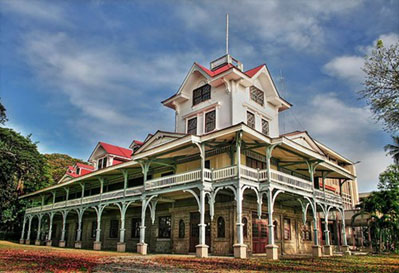
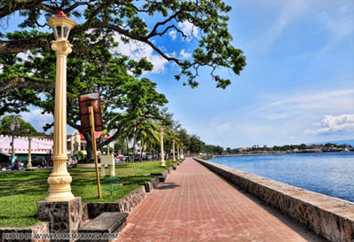
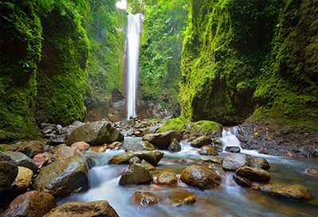

REGION VII : Central Visayas
The City of Gentle People- Negros Oriental( Dumaguete City )
Top Things to do
- - Learn Something New - -

Siliman University
Dumaguete City
Established in 1901 by Protestant missionaries of the Presbysterian Church in the United States,
it is one of oldest American university in the Asia. As a major landmark in the heart of Dumaguete City, the
campus is quite big, with a number of giant acacia trees around and some buildings having a colonial American
architecture. Tourists can roam around the university by leaving identification card to the guard. .

Rizal Boulevard
Dumaguete City
From the Siliman University, Rizal Boulevard is just a stone's throw away. It is Dumaguete's version of Manila
Baywalk, it was named after the great Philippine National Hero Dr. Jose Rizal. It has been said that he had made a brief visit
and took a stroll before departing to the neighboring island of Dapitan, Dipolog City where he was exiled for four years. Rizal
Boulevard is a perfect place to experience the sunrise as well as the sunset.
- - Explore the Beauty of Falls - -

Casaroro Falls
Dumaguete City
One of the most popular destination in Dumaguete City is the Casaroro Falls located at the towan Valencia, Negros Oriental.
Considered to be the most photographed waterfall in the entire province. Tuck in the rock crevices of the craggy Valencia mountains , the
water flows and drop at height of 100 feet to a deep cold catch basin.